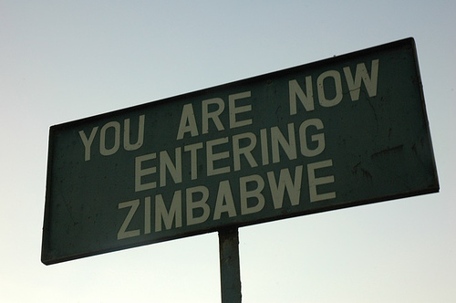
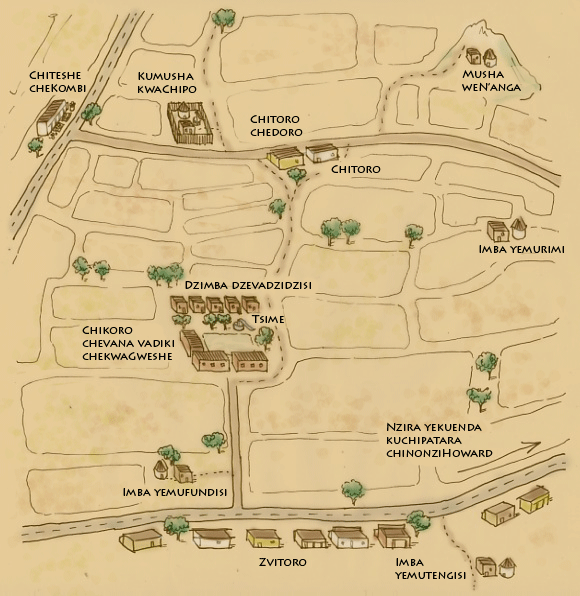

| Map | Characters | Culture | Grammar | Glossary | Links | Authors |
|---|

|
Welcome to the Virtual Shona Village! The virtual village is modeled after a real village in Northeastern Zimbabwe, called Gweshe. Gweshe is located in Chiweshe Communal Lands, about an hour's drive North of Harare, Zimbabwe's capital. You can enter the village by clicking anywhere on the map below. For first time visitors, we recommend that you start at Chipo's home (kumusha kwaChipo) . |
